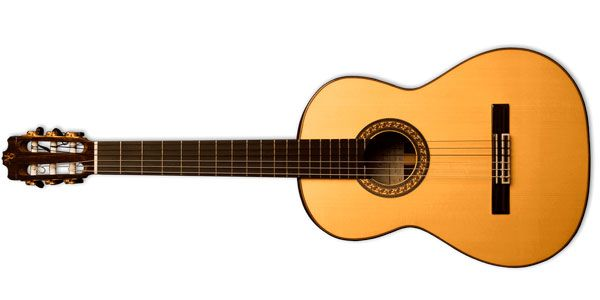
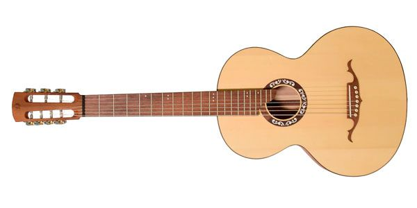
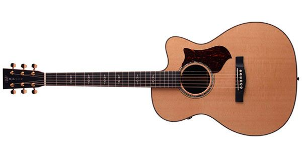
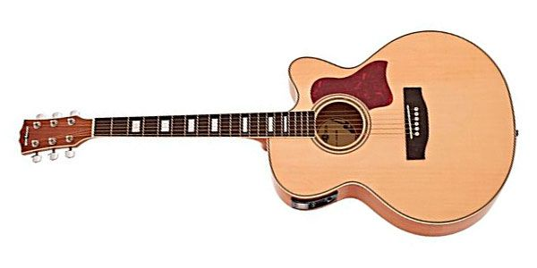
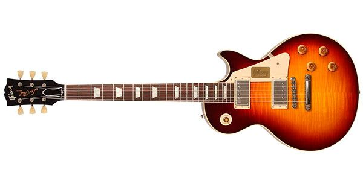
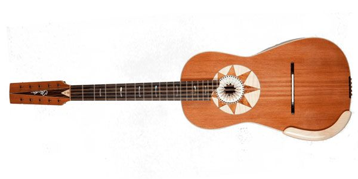
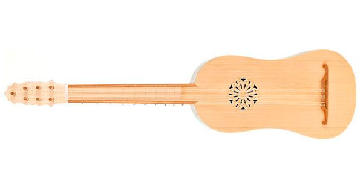
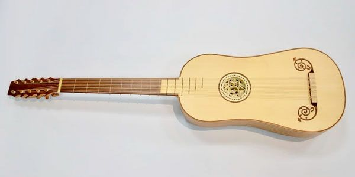

Tipos de guitarras
Características de la Guitarra clásica, española o criolla
La guitarra clásica se caracteriza por tener seis cuerdas afinadas y una caja de resonancia plana en forma de ocho. En la tapa armónica se encuentra una abertura o boca de resonancia. El mástil está compuesto por un diapasón con diecinueve trastes metálicos y un clavijero donde se regulan y afinan las cuerdas mediante clavijas y tornillos sin fin. En la actualidad, las guitarras suelen tener una mayor tensión en las cuerdas, con una fuerza de entre seis y siete kilogramos aplicada a través de las clavijas.

Guitarra flamenca
La guitarra flamenca se distingue por su caja ligeramente más estrecha y cuerdas más cercanas al diapasón, lo que la hace más cómoda y rápida de tocar. Construida con maderas como el palosanto, ciprés o sicomoro para el fondo y los aros, y abeto alemán para la tapa, ofrece un sonido brillante y percusivo que se adapta perfectamente al flamenco. La roseta protege la madera de golpes y rasgueos, y aunque es menos sonora y tiene un volumen menor que la guitarra clásica, su carácter distintivo la convierte en una elección ideal para el flamenco.
Guitarra Rusa
La guitarra rusa, también conocida como "guitarra gitana", es un instrumento de siete cuerdas que se desarrolló en Rusia a finales del siglo XVIII. Atribuido a Andrei Sichra, este instrumento se diferencia de la guitarra española por su séptima cuerda. Existen dos tipos: la guitarra clásica, similar a la española, y la guitarra gitana, con cuerdas de acero, más cercana a una guitarra acústica. Su legado incluye más de mil composiciones para este particular instrumento.
Guitarra acustica
La guitarra acústica, creada en el siglo XIX por fabricantes de instrumentos musicales estadounidenses conocidos como Western Guitars, no necesita amplificación y se destaca por su caja de resonancia que amplifica el sonido de las cuerdas vibrantes. Es un instrumento versátil, utilizado en diversos géneros musicales como blues, pop, jazz y rock. Con su mástil más delgado, ofrece mayor comodidad y facilidad de ejecución en comparación con la guitarra clásica. La guitarra acústica se compone de clavijero, trastero, mástil y puente, y produce un sonido natural sin necesidad de amplificación eléctrica.
Guitarra electroacústica
Las guitarras electroacústicas, también conocidas como guitarras electrificadas, están equipadas con un micrófono que se puede conectar a sistemas de sonido PA o amplificadores. Esto permite que el sonido se proyecte con mayor fuerza. Estas guitarras utilizan transductores piezoeléctricos para obtener un sonido agudo y natural.
Guitarra eléctrica
La guitarra eléctrica es un instrumento musical que utiliza cuerdas de metal y está equipada con uno o varios transductores electromagnéticos, conocidos como pastillas o pickups en inglés. Estas pastillas convierten las vibraciones de las cuerdas en señales eléctricas, permitiendo que sean procesadas y amplificadas.
Guitarra Italiana
La guitarra italiana, también conocida como Chitarra battente, se originó en el siglo XIV y solía acompañar a juglares y trovadores de la época. Es un instrumento tradicional del sur de Italia, específicamente de regiones como Basilicata, Campania, Calabria, Abruzo, Puglia y Molise. Su característica distintiva es su forma alargada en forma de ocho.
Guitarra renacentista
La guitarra renacentista, al igual que la vihuela, fue un instrumento ampliamente utilizado para acompañar danzas, canto y música en tablatura. Se caracterizaba por tener cuatro órdenes de cuerdas, una simple y las demás dobles, afinadas en octavas o unísono. Esta variante de guitarra se distinguía por tener menos cuerdas y un tamaño más reducido.
Guitarra barroca
La guitarra barroca, contemporánea de la guitarra renacentista, se asemejaba en forma a la guitarra clásica actual, aunque ligeramente más pequeña. A diferencia de su predecesora, la guitarra barroca presentaba trastes ubicados al mismo nivel de la tapa y añadía un orden adicional en la sección grave. Además, este instrumento se caracterizaba por una elaborada decoración, incluyendo una boca muy ornamentada.
